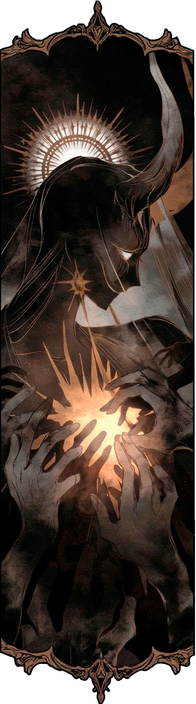
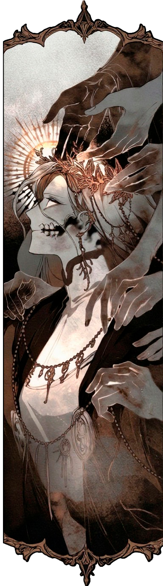

Мифология, Вера и Магия
Сотворение Мира
Иерархия мироздания
- Судьба Изначальный Закон, план мироздания.
- Мир (Бог) Воплощение «Воли Мира», вобравшее в себя всё сущее.
- Прародители Дети Мира и Судьбы.
- Смертные боги Рожденные верой (Руш, Тэяма, Варситэя, Варсис).
- Смертные Люди, оку, эльфы, лепусиды и другие расы.
В пустоте родилась «Воля». Она была слаба, но необъятна, растеряна, потрясена и слепа. Не зная своей цели и происхождения, «Воля» кричала в надежде услышать ответ. Но ответа не было, ведь она была одна.
Не желая одиночества, «Воля» создала «Её», вселенную, осязаемую и прекрасную, но глухую и слепую. «Воля» любила «Её», ведь пустота наполнена вселенной, а вселенная окружена пустотой. Так родилась «Судьба».
«Она» наконец услышала «Волю» и увидела ту, от радости возникла «Буря», из которой родился «Свет». Но «Свет» был слаб и погиб, рассыпавшись на миллиарды осколков по вине «Воли». «Она» собрала осколки, наполнив ими своё естество. «Воля» не понимала, почему «Она» так дорожит «Светом». В конце концов, от «Воли» родился «Мир». «Мир» поглотил всё: «Хаос», «Бурю», звёзды и «Её». Так «Мир» обрёл свой смысл и стал воплощением плана «Судьбы», а появился Бог — воплощение «Воли Мира».
Став воплощением плана «Судьбы» и вобрав в себя всё сущее, «Мир» (Бог) обрел абсолютную власть над материей. От его союза с самим Законом (Судьбой) на свет появились Прародители — первые и величайшие из богов.
Они унаследовали от Отца способность творить и изменять материю, а от Матери — причастность к изначальному плану. Прародители находятся вне категорий добра и зла. Они не добрые и не злые — они просто «Есть». Они наблюдают, экспериментируют и играют судьбами смертных, но их мотивы непостижимы. Для них смертные — игрушки, а мир — площадка для игры.
Природа Смертных Богов
Только смертные боги, рождённые уже человеческой верой, могут быть условно разделены на «добрых» и «злых», ибо они питаются человеческими представлениями о морали. Если какому-либо правителю начинают массово поклоняться как божеству, вера создаёт «новое, отдельное существо» — смертного бога, который будет лишь похож на оригинал, но всегда с искажением.
Смертный бог не может бесконечно долго управлять живыми напрямую. Если кто-то из них попытается сесть на трон и править, за ним придут Прародители. Поэтому все известные смертные боги либо странствуют (как Варсис), либо живут обособленно (как Тэяма), либо действуют тайно (как Руш).
Божественный Пантеон
Боги смертного мира — это не добрые творцы, а воплощения замысла судьбы. Они наблюдают, защищают и надзирают. Они не спасители, не праведники, но справедливы и опасны. Их главное правило: «Молись богам, почитай и уважай, будь праведен и не сотвори зла. Молись им, но лишь благодаря, не вопрошай и не проси их о чем-либо. Ибо они придут, откликнувшись на твою просьбу, и ждать тебя будет лишь забвение».


Смертные Боги (Рождённые Верой)
Не все боги древние. Некоторые родились из коллективной веры, страха или надежды смертных. Они ближе к миру, но от этого не менее опасны.
- Руш — Бог Знаний и Магии. Родился из любопытства и стремления смертных к познанию. Нашёл «лазейку» к силе, которую назвал магией, и обучил ей первых учеников. Коллекционирует секреты со всего мира.
- Тэяма — Мать-Природа. Почитается народом Оку и гоблинами как создательница всего сущего. Она — сама природа: может быть доброй и щедрой, а может — безжалостной и смертоносной. Её дочери, Тэяко (одна из версий подрасы дриад), служат её вестницами.
- Варсис — Бог Войны и Крови. Рождён бесконечными войнами Империи Юрган. Когда-то ему поклонялся сам Максимилиан Хелон, но предал своего бога, заключив мир с Оку. С тех пор Варсис скитается в поисках новой Великой Войны.
- Варситэя — Богиня Любви и Войны. Самая молодая из богов, рождённая от смешения культур Тэямы и Варсиса на полуострове Окутан. Она покровительствует тем, кто любит и сражается одновременно.
Прародители (Изначальные Боги)
Те, кто известен сейчас:
- Арата — богиня света и покровительница высших эльфов. Создала звезду Кастор (местное солнце). Именно по её образу были созданы первые эльфы.
- Моремор — бог морей и океанов. После истребления Титанов он 500 лет без устали наполнял водные глубины своими творениями, самыми известными из которых стали Змеевыры.
- Бахулус — «Похабный» Бог, чьё имя было намеренно забыто или скрыто. Самый непредсказуемый и игривый из Прародителей. Создал расу Суар для утех, подарил эльфам их легендарную чувствительность ушей, и, по теории Руша, несёт ответственность за появление зверолюдей.
- Фест — бог-прародитель, бог-кузнец, покровитель ремесленников.
Иные Миры и Сущности
Боги любят эксперименты, но когда приходит осознание, что они переборщили, появляется необходимость избавиться от помех. Первым избавлением от помех было «жалкое» сопротивление титанов. После него они решили, что не хотят избавляться от своих самых неудачных и странных созданий. Для них они придумали другие измерения, доступ к которым сохранили через пространственные порталы.
Некоторые порталы остаются в «Изначальном мире», другие помещают в пустоте, чтобы наведываться в них. Со временем этих «ошибочных» измерений скопилось столько, что мерцание от них стало заметно на ночном небосводе. Люди назвали их звездами. Но люди ошибаются, считая их прекрасными, ведь и не представляют, насколько опасные места находятся на той стороне.
Помимо «Изначального мира» и измерений Прародителей, существует и «потусторонний мир». Секреты его неизвестны смертным. Лишь опытные маги способны открывать туда двери. Оттуда приходят души, состоящие из «густой маны».
Обитатели Иных Миров
- Титаны — Первая, грубая попытка богов создать людей. Огромные, как горы, существа, которых пришлось истребить.
- Элементали — Созданные для придания формы миру, они вышли из-под контроля. Эльфы вели с ними долгую войну. Ныне большинство элементалей заточены в своих стихийных планах, но маги могут призывать их оттуда.
- Демоны — Не раса, а состояние. Искажённые души, обезумевшие духи или вышедшие из-под контроля призраки. С ними можно сражаться и побеждать, в отличие от богов.
Магия и Вера
В этом мире вера и страх обладают колоссальной силой. Если большая группа людей долго во что-то верит, это и правда может появиться на свет. Страх — самый мощный источник для порождения невиданных существ. Слепая вера в выдуманного бога приведет к его рождению.
Однако есть и исключение: если писатель напишет былину о монстрах, это не появится в мире, ведь люди будут знать, что она выдумана, и нет повода бояться. За множество веков страхи и желания смертных породили множество монстров и богов, за чем с превеликим удовольствием наблюдают Прародители.
Главный Закон Мира: Мысли Материальны
Коллективная вера, сильный страх или безудержное желание способны менять реальность. Именно так рождаются новые боги, чудовища и духи. Поэтому ни в коем случае нельзя молиться богам с просьбами — это привлечёт их внимание.
В зависимости от способа взаимодействия с силой мира, магия делится на два основных пути:
Академическая Магия (Дар Руша)
Это строгая наука. Маги учатся управлять потоками маны с помощью заклинаний и формул. Это опасно, но предсказуемо. Лучшие из них носят звание Мелиора и синие мантии.
Шаманство гоблинов (Дар Природы)
Это интуитивное искусство, которым владеют гоблины и некоторые Оку. Шаманы не учат заклинания, а договариваются с духами, используют грибы и травы, а также изменяют собственное тело. Их магия разнообразна и непредсказуема.
Но не вопрошай и не проси их о чём-либо нагло.
Ибо они придут — не с дарами, не с милостью,
А с вихрем звёздным, с бездной за плечами.
И ждать тебя будет не награда, а лишь забвение,
С нотками экстаза, что душу возьмут в плен,
Где память растает, как дым на ветру,
А воля — сольётся с вечным „да будет так“».